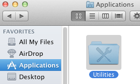
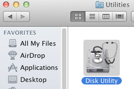
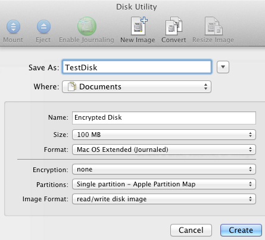
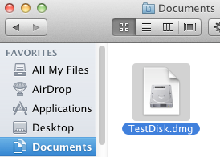
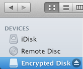

If you have files
wanting to encrypt:
-
Open
Utilities
in
Applications
:

-
Open
Disk Utility
in
Utilities
:

-
Click
New Image
icon.
Select
Size
according to how much
size of encrypted container and select
Encryption
then AES-256. Then click
Create
to create a new encrypted
virtual disk file:

-
Copy all data you want to be encrypted to the new encrypted disk
which should be mounted now. If it is not mounted, open the disk image
file:

-
To dismount the encrypted disk click the eject icon:
